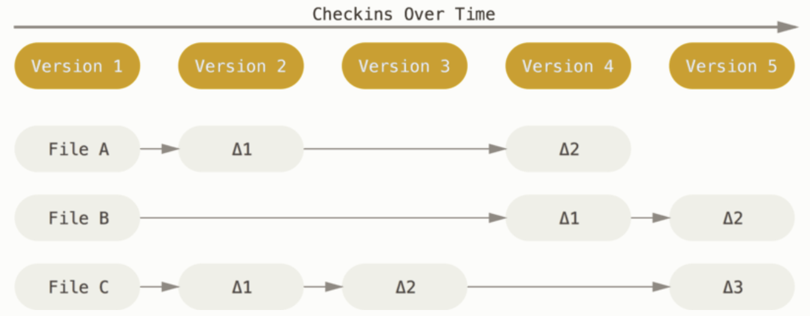
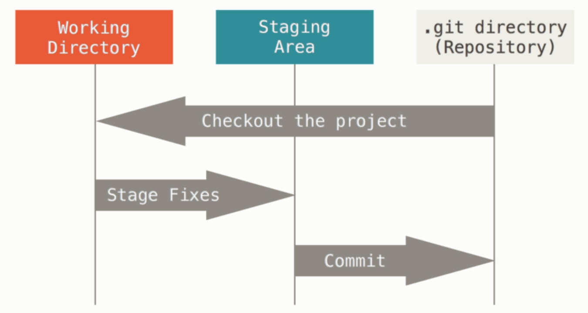

Git 简介
Xiu Di / 2021-04-09
版本控制
版本控制是一种记录一个或若干文件内容变化，以便将来查阅特定版本修订情况的系统。
图形或网页设计师，可能会需要保存某一幅图片或页面布局文件的所有修订版本。版本控制系统可以帮助将选定的文件甚或整个项目回溯到之前某个状态、比较文件的变化细节、查看何时报告了某个功能缺陷。
分布式版本控制系统
在分布式版本控制系统 (Distributed Version Control System) 中，客户端不只提取最新版本的文件快照，而是把代码仓库完整地镜像下来，包括完整的历史记录。
每一次的克隆操作，实际上都是一次对代码仓库的完整备份。
任何一处协同工作的服务器发生故障，都可以用任何一个镜像出来的本地仓库恢复。
Git 简史
Git诞生于一个极富纷争的年代。
Linux内核开源项目有着为数众多的参与者。1991-2002年间，Linux内核维护工作牵涉到大量提交补丁、保存归档的繁琐事务。2002年，项目组启用分布式版本控制系统BitKeeper来管理和维护代码。2005年，BitKeeper的开发者同Linux内核开源社区合作关系结束，迫使Linux开源社区（特别是Linux的缔造者Linus Torvalds）开发出自己的版本控制系统。他们对新的系统制定了若干目标：
-
速度
-
简单的设计
-
对非线性开发模式的强力支持（允许成千上万个并行开发的分支）
-
完全分布式
-
有能力高效管理类似Linux内核一样的超大规模项目（速度和数据量）
自2005年诞生以来，Git日臻完善。在高度易用的同时，保留着初期设定的目标。Git速度飞快，及其适合管理大型项目，有着令人难以置信的非线性分支管理系统。
Git 是什么
Git与其他的版本控制系统有颇多相似之处，但在对信息的存储和认知方式上有着很大差异。
直接记录快照，而非差异比较
大部分系统以文件变更列表的方式存储信息，这类系统(常称为基于差异(delta-based)的版本控制)将它们存储的信息看作是一组基本文件和每个文件随时间逐步累积的差异。 
Git对待数据更像是一个快照流。每当提交更新或保存项目状态时，Git对此时全部文件创建快照并保存快照索引。
近乎所有操作都是本地执行
在Git中的绝大多数操作都只需要访问本地文件和资源，一般不需要来自网络上其他计算机的信息。
Git保证完整性
Git中所有的数据在存储前都计算校验和，然后以校验和来引用。这意味着在Git不知情时不能更改任何文件内容或目录内容。
Git用于计算校验和的机制为SHA-1散列，这是一个由40个十六进制字符组成的字符串，基于Git中文件的内容或目录结构计算出来。
Git中众多场景应用这种哈希值。Git数据库中保存的信息都是以文件内容的哈希值来索引，而不是文件名。
Git一般只添加数据
Git操作几乎只向Git数据库中添加数据。而Git几乎不会执行任何可能导致文件不可恢复的操作，即Git不会从数据库中删除数据。
三种状态
Git有三种状态，文件状态可能处于其中之一：
已修改(modified):修改了文件，但还没保存到数据库中。
已暂存(staged):对一个已修改文件的当前版本做了标记，使其包含在下次提交的快照中。
已提交(committed):数据已经安全地保存在本地数据库中。
相应地，在Git中有三个阶段：工作区、暂存区、Git目录。 
工作区:对项目的某个版本独立提取出的内容。
暂存区:保存了下次将要提交的文件信息列表信息。
Git目录:Git用来保存项目的元数据和对象数据库的地方。
基本的Git工作流程如下:
1.在工作区中修改文件。
2.将下次要提交的更改选择性地暂存。
3.提交更新，找到暂存区的文件，将快照永久性地存储到Git目录中。
HELP
使用Git时若需要获取帮助，有三种查阅手册的等价方式：
$ git help <verb>
$ git <verb> --help
$ man git-<verb>
如果不需要全面的手册，可以用-h选项获得更加简明的输出。如$ git add -h